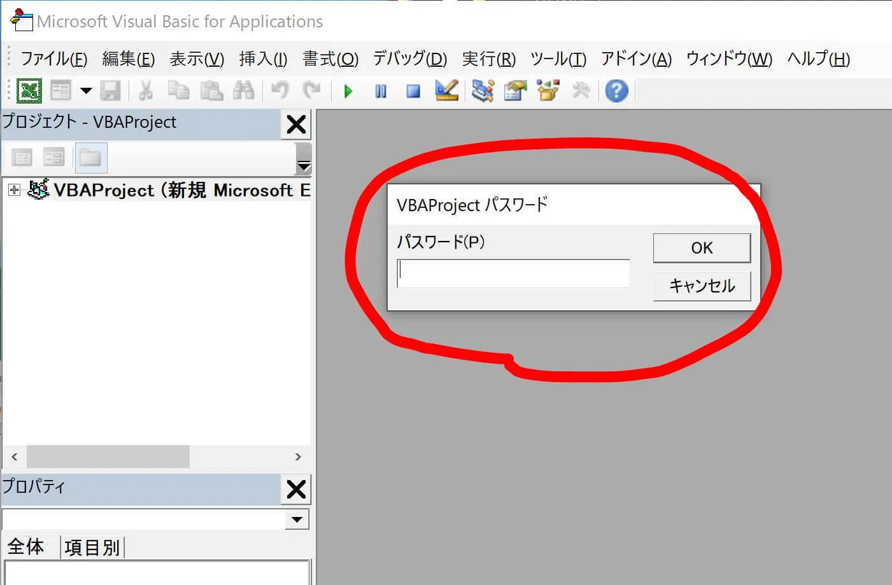
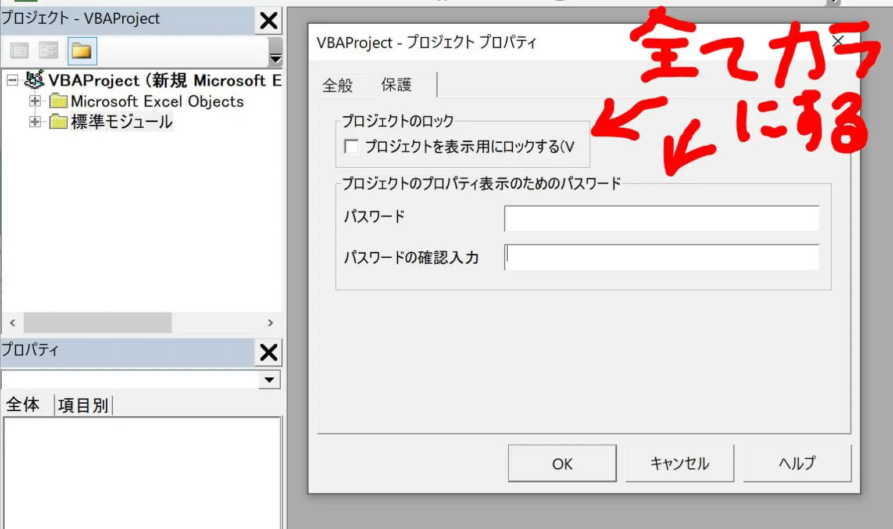

1. VBA-マクロのパスワード解除とは？（VBAProjectパスワードのこと）
マクロのパスワード解除とは、「VBAProject パスワード」の解除って意味です。
下図で赤枠で囲ってあるパスワード解除方法について本記事では触れていきます。

2. VBA-PW解除コードの紹介（※コピペでOK）
EXCELのバージョンによって、使用するコードが若干異なります。
|
違う箇所は、変数の部分ですね。 64bit版だとlongptrという変数を使用しています。 |
Excel 32bit 版はこちら
Public Const PAGE_EXECUTE_READWRITE = &H40
Public Declare PtrSafe Sub MoveMemory Lib "kernel32" Alias "RtlMoveMemory" (Destination As LongPtr, Source As LongPtr, ByVal Length As LongPtr)
Public Declare PtrSafe Function VirtualProtect Lib "kernel32" (lpAddress As LongPtr, ByVal dwSize As LongPtr, ByVal flNewProtect As LongPtr, lpflOldProtect As LongPtr) As LongPtr
Public Declare PtrSafe Function GetModuleHandleA Lib "kernel32" (ByVal lpModuleName As String) As LongPtr
Public Declare PtrSafe Function GetProcAddress Lib "kernel32" (ByVal hModule As LongPtr, ByVal lpProcName As String) As LongPtr
Public Declare PtrSafe Function DialogBoxParam Lib "user32" Alias "DialogBoxParamA" (ByVal hInstance As LongPtr, ByVal pTemplateName As LongPtr, ByVal hWndParent As LongPtr, ByVal lpDialogFunc As LongPtr, ByVal dwInitParam As LongPtr) As Integer
Dim HookBytes(0 To 5) As Byte
Dim OriginBytes(0 To 5) As Byte
Dim projectFunction As Long
Dim Flag As Boolean
Public Function GetPtr(ByVal Value As LongPtr) As LongPtr
GetPtr = Value
End Function
Public Sub RecoverBytes()
If Flag Then MoveMemory ByVal projectFunction, ByVal VarPtr(OriginBytes(0)), 6
End Sub
Public Function MyDialogBoxParamater(ByVal hInstance As LongPtr, ByVal pTemplateName As LongPtr, ByVal hWndParent As LongPtr, ByVal lpDialogFunc As LongPtr, ByVal dwInitParam As LongPtr) As Integer
If pTemplateName = 4070 Then
MyDialogBoxParamater = 1
Else
RecoverBytes
MyDialogBoxParamater = MyDialogBoxParamater(hInstance, pTemplateName, hWndParent, lpDialogFunc, dwInitParam)
HookFlag
End If
End Function
Public Function HookFlag() As Boolean
Dim TmpBytes(0 To 5) As Byte
Dim p As Long
Dim OriginProtect As Long
HookFlag = False
projectFunction = GetProcAddress(GetModuleHandleA("user32.dll"), "DialogBoxParamA")
If VirtualProtect(ByVal projectFunction, 6, PAGE_EXECUTE_READWRITE, OriginProtect) <> 0 Then
MoveMemory ByVal VarPtr(TmpBytes(0)), ByVal projectFunction, 6
If TmpBytes(0) <> &H68 Then
MoveMemory ByVal VarPtr(OriginBytes(0)), ByVal projectFunction, 6
p = GetPtr(AddressOf MyDialogBoxParamater)
HookBytes(0) = &H68
MoveMemory ByVal VarPtr(HookBytes(1)), ByVal VarPtr(p), 4
HookBytes(5) = &HC3
MoveMemory ByVal projectFunction, ByVal VarPtr(HookBytes(0)), 6
Flag = True
HookFlag = True
End If
End If
End Function
Sub VBAProjectパスワード解除()
If HookFlag Then
MsgBox "VBA Project を解除しました。", vbInformation, "成功しました。"
End If
End Sub
Excel 64bit 版はこちら
Public Const PAGE_EXECUTE_READWRITE = &H40
Public Declare PtrSafe Sub MoveMemory Lib "kernel32" Alias "RtlMoveMemory" (Destination As LongPtr, Source As LongPtr, ByVal Length As LongPtr)
Public Declare PtrSafe Function VirtualProtect Lib "kernel32" (lpAddress As LongPtr, ByVal dwSize As LongPtr, ByVal flNewProtect As LongPtr, lpflOldProtect As LongPtr) As LongPtr
Public Declare PtrSafe Function GetModuleHandleA Lib "kernel32" (ByVal lpModuleName As String) As LongPtr
Public Declare PtrSafe Function GetProcAddress Lib "kernel32" (ByVal hModule As LongPtr, ByVal lpProcName As String) As LongPtr
Public Declare PtrSafe Function DialogBoxParam Lib "user32" Alias "DialogBoxParamA" (ByVal hInstance As LongPtr, ByVal pTemplateName As LongPtr, ByVal hWndParent As LongPtr, ByVal lpDialogFunc As LongPtr, ByVal dwInitParam As LongPtr) As Integer
Dim HookBytes(0 To 5) As Byte
Dim OriginBytes(0 To 5) As Byte
Dim projectFunction As LongPtr
Dim Flag As Boolean
Public Function GetPtr(ByVal Value As LongPtr) As LongPtr
GetPtr = Value
End Function
Public Sub RecoverBytes()
If Flag Then MoveMemory ByVal projectFunction, ByVal VarPtr(OriginBytes(0)), 6
End Sub
Public Function MyDialogBoxParamater(ByVal hInstance As LongPtr, ByVal pTemplateName As LongPtr, ByVal hWndParent As LongPtr, ByVal lpDialogFunc As LongPtr, ByVal dwInitParam As LongPtr) As Integer
If pTemplateName = 4070 Then
MyDialogBoxParamater = 1
Else
RecoverBytes
MyDialogBoxParamater = MyDialogBoxParamater(hInstance, pTemplateName, hWndParent, lpDialogFunc, dwInitParam)
HookFlag
End If
End Function
Public Function HookFlag() As Boolean
Dim TmpBytes(0 To 5) As Byte
Dim p As LongPtr
Dim OriginProtect As LongPtr
HookFlag = False
projectFunction = GetProcAddress(GetModuleHandleA("user32.dll"), "DialogBoxParamA")
If VirtualProtect(ByVal projectFunction, 6, PAGE_EXECUTE_READWRITE, OriginProtect) <> 0 Then
MoveMemory ByVal VarPtr(TmpBytes(0)), ByVal projectFunction, 6
If TmpBytes(0) <> &H68 Then
MoveMemory ByVal VarPtr(OriginBytes(0)), ByVal projectFunction, 6
p = GetPtr(AddressOf MyDialogBoxParamater)
HookBytes(0) = &H68
MoveMemory ByVal VarPtr(HookBytes(1)), ByVal VarPtr(p), 4
HookBytes(5) = &HC3
MoveMemory ByVal projectFunction, ByVal VarPtr(HookBytes(0)), 6
Flag = True
HookFlag = True
End If
End If
End Function
Sub VBAProjectパスワード解除()
If HookFlag Then
MsgBox "VBA Project を解除しました。", vbInformation, "成功しました。"
End If
End Sub
3. VBA-紹介コードの使用方法
使い方は、以下の通り。
- 新しいEXCELを開く（以下、Aファイルとする）
- マクロにPWが掛かったEXCELを開く（以下、Bファイルとする）
- Aファイル側にPW解除マクロコードをコピペ（適当な新規プロシージャに。）
- Aファイル側でPW解除コードを実行（実行するSub名：VBAProjectパスワード解除）
- Bファイル側のマクロPWが解除されている

注意ポイント
尚、Bファイルを閉じてしまうとPWロックが復活してしまいますので、
もしPW自体を削除したい場合は、PWロック解除後に、
BファイルのVBE側で
「ツール」→「VBAProjectのプロパティ」
から設定されたパスワードを削除しましょう。
そうすればPW復活はしなくなります。
具体的には、以下のキャプチャの通りの状態にしてあげましょう。
